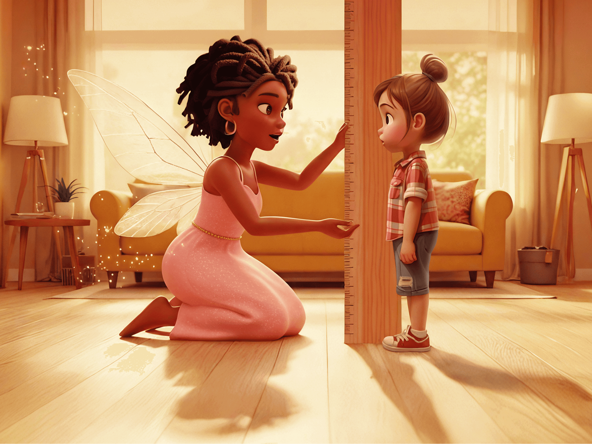
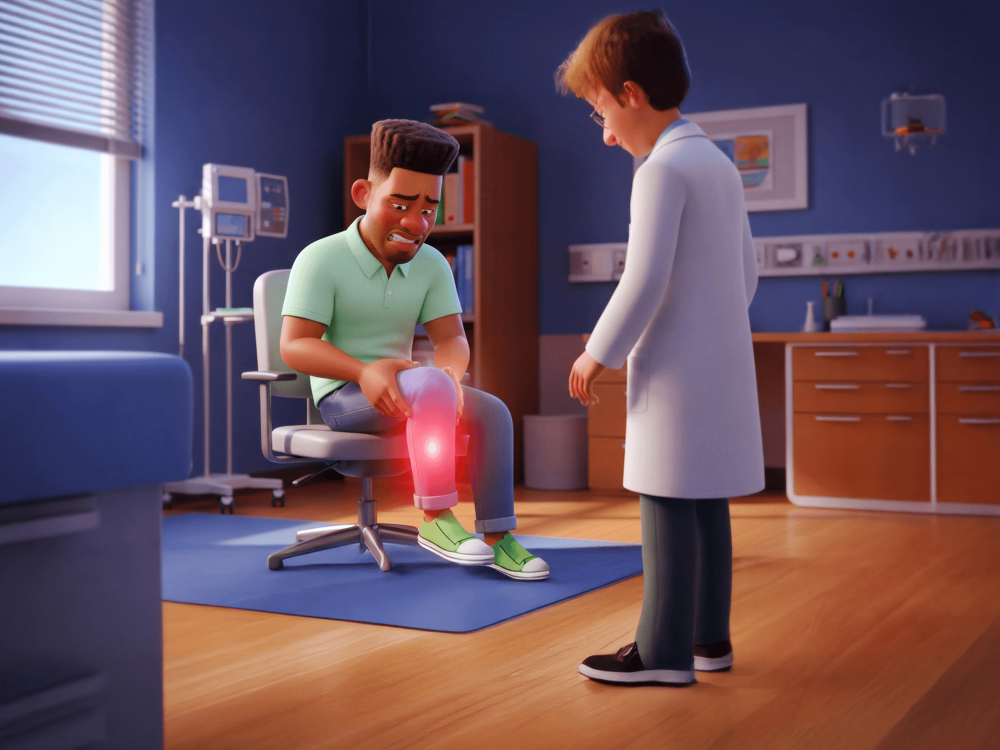
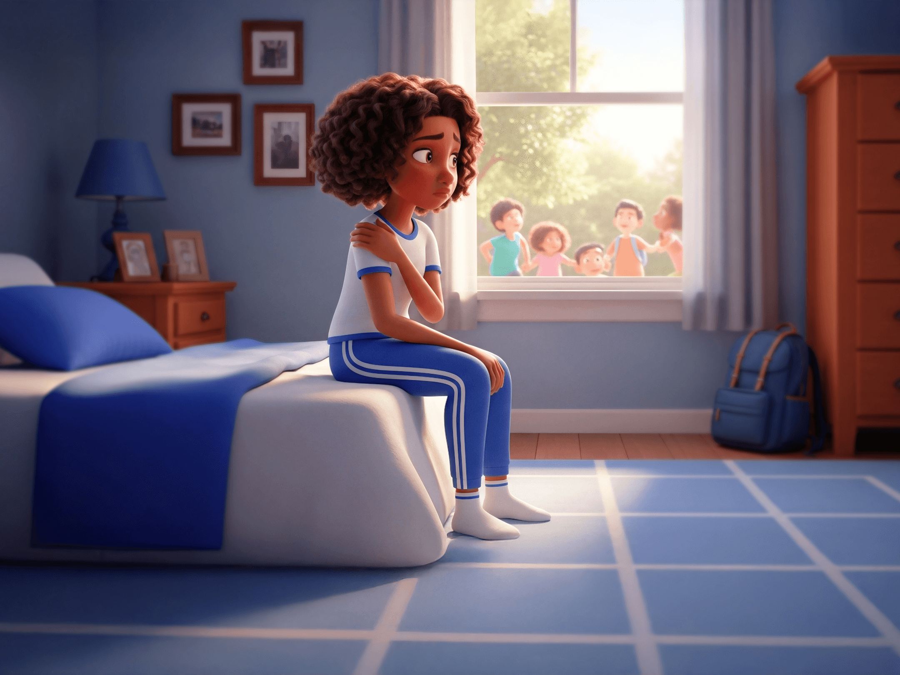

00:00:00
Qual dos sinais abaixo pode indicar suspeita de Hipofosfatasia em uma criança?
Dente de leite caiu com raiz intacta antes dos 4 anos
Dor ou cansaço nos braços e pernas sem motivo aparente
Crescimento abaixo da média
Todas as anteriores
A Hipofosfatasia (HPP) é uma doença hereditária?
Verdadeiro
Falso
Quem são os especialistas que podem ajudar no diagnóstico da Hipofosfatasia?
Dentistas e pediatras
Endocrinologistas, ortopedistas, geneticistas e reumatologistas
Cardiologistas e dermatologistas
Professores e enfermeiros
Qual enzima está em níveis anormalmente baixos em pacientes com HPP
de forma persistente?
de forma persistente?
Hemoglobina
Creatina quinase
Fosfatase alcalina (FAL)
Insulina
A Hipofosfatasia (HPP) tem cura?
Sim, a HPP pode ser completamente curada com o tratamento adequado.
Não, a HPP não tem cura, mas possui tratamento que alivia sintomas
e previne complicações.
e previne complicações.
A Hipofosfatasia (HPP) pode comprometer as atividades da vida diária?
Não, a HPP não afeta as atividades do dia a dia dos pacientes.
Apenas crianças com HPP apresentam dificuldades funcionais.
O impacto da HPP se restringe apenas a fraturas ósseas, sem influência em atividades diárias.
Sim. Adultos e crianças com HPP podem apresentar diminuição da capacidade de caminhar, velocidade de marcha lenta e dificuldade de se levantar repetidamente de uma posição sentada, o que pode comprometer atividades da vida diária.